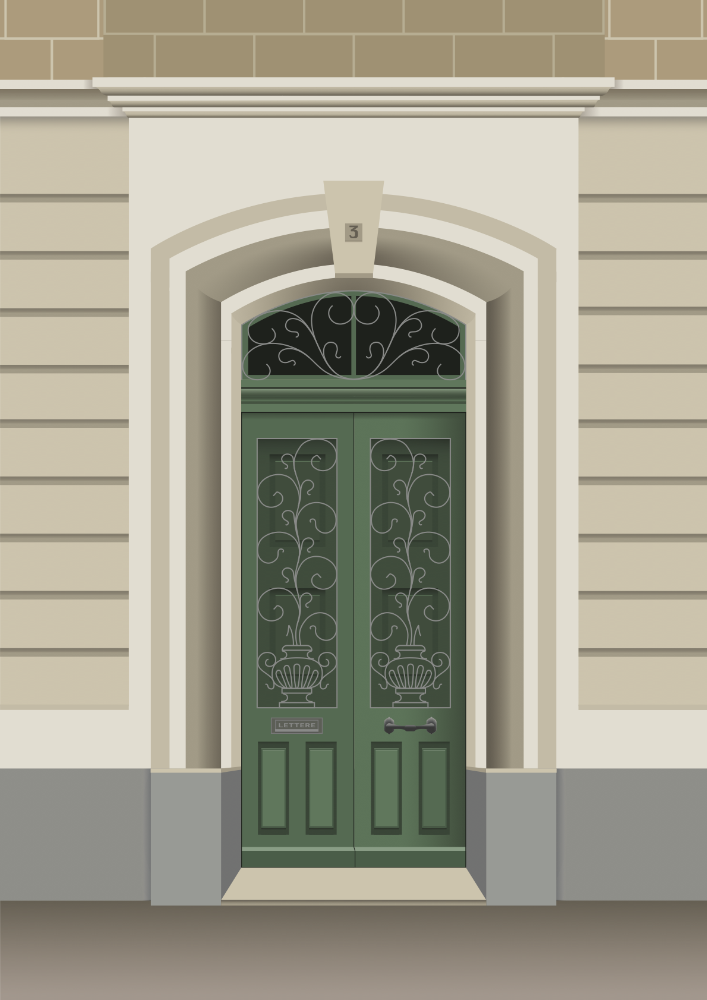
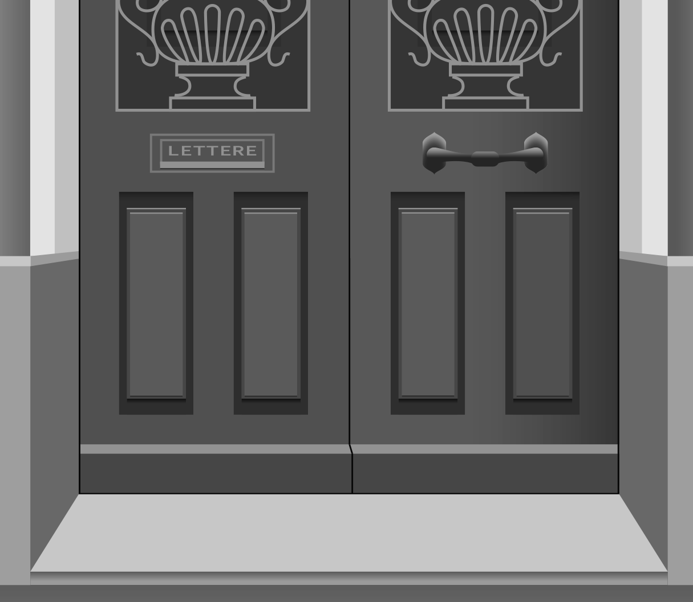
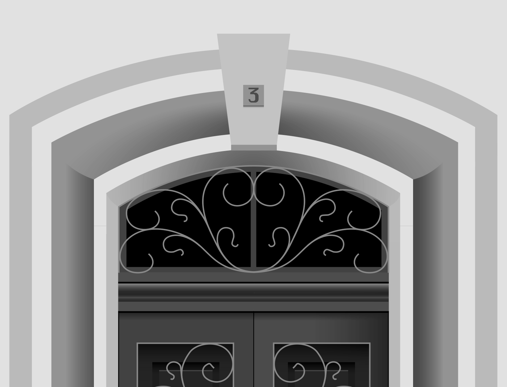

MALTA DOORS
POSTER
Malta doors is a visual blog that
documents colourful and quirky
facades and doors on the
Maltese Islands.
For this assignment, we were “commissioned”
to design a vector illustration for an A4 poster
for Malta doors in the style of Te’ fit-tazza.
From conducting visual research of the
brands, photographing different doors around
the island, sketching concepts for shortlisted
doors in the style, and the eventual build on
Adobe Illustrator, the chosen door came to
‘2D life’ on the screen.


